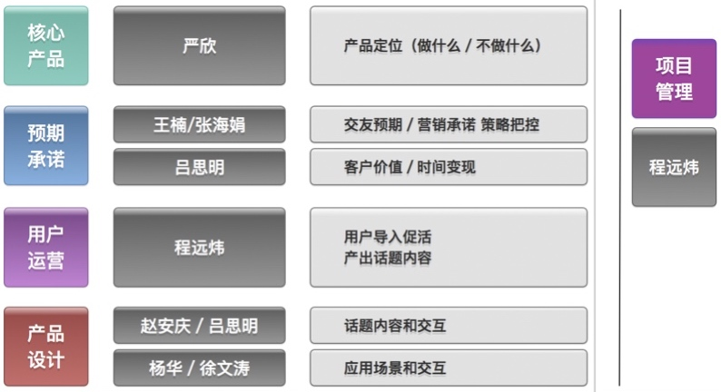

1. 阿波罗项目进展
项目开发进度正常，上周将所有开发功能制作了和承包。初期运营的内容准备工作量不小，全组参与了前期用户和视频内容的准备。
下周产出α版本。
2. 新产品业务框架
新产品的三个基本的要素：
- 轻视频
- 内容主线及场景主线
- 用户运营
轻视频
轻视频是新产品内容的主要承载形式，服务器端同华明已经进行了沟通，是以公司战略方向的重要性进行部署的，在存储和播放流畅度上进行了探讨，问题不大。
前端在轻视频上有两个重点，视频产生及播放效果。 考虑到加快开发进度和难度，视频产生通过趣拍第三方服务的方式进行快速开发，其中视频录制流程和码流规范都按当前最成熟的方式处理。在第一期上线视效果来定是否在团队内部进行视频技术人员的储备。
视频播放由三部技术人员自行开发，播放方式暂时当前最主流的软件看起（如微信和今日头条等）。
内容主线及场景主线
用户使用流程分为两条基本的主线，内容主线及场景主线。其中内容主线以框定的话题内容为建立连接的流程，旨在通过内容展现加强用户的交友预期，从而使用户发起建立连接的第一步。 这条主线在执行过程中主要是对内容目标进行把控，严控产品人员为了内容而内容忘记主线目的，有严欣和远炜把控，不会偏离方向。内容对傻强用户是否主够有建立连接的强度，此处需要多留有备案！
场景为以找人为目的的用户设计，包括通过同城等或通过组件进行配对，这条线是有缘1.0版本最成熟的模式，简单直接但容易让用户疲惫。 这条线是我们比较熟悉的模式，执行层面没什么问题。
上线以后才会对两条主线的权重配比进行调整，在产品设计上已经照顾到运营两条主线的配比问题。
用户运营
对于友缘来说，这个是新的课题，一旦建立起来，将会解决生态和合规的问题。程远炜负责该模块，对于种子用户引入，驱利用户运营等都是新的课题，我这边会投入较多精力跟踪其进展。
3. 业务风险点
团队片面追求arpu，阻碍产品推进
这个是我最担心的问题，1是团队内部强大的arpu基因，2是团队的激励以收入增长为基础。
ROI达不到预期
这次是对客户端进行全面的升级，从包的大小，注册流程都进行了改变，但从arpu值无法对比提升效果，需从下载（或曝光）arpu进行对比。
策略使用过重
提出了策略的推出机制，在运营期间，策略控制在3封以内。
审核机制和风控
视频的审核机制友缘是没有建立的，行业是通过随机抓取视频的15-20张图片进行初步审核。但当前有较为成熟的第三方视频审核，自建还是外包还需进行一轮调研而定。
4. 业务扩展设想
平台扩展
平台扩展：iOS提前开发，目前开发人员有限，采用跟进策略。
在项目无明确产出之前，为加快平台布局，考虑微信版本现已H5的形式进行产品跟进，建议通过外包技术进行开发，费用控制每月4万以内，下周准备接触人选。
在试运营效果不错以后，可以同商务三部产品团队接触，看能否合并团队布局微信。
多产品扩展
新产品上线后，如果运营效果达标，可以立即开展多名称进行渠道试水，这个流程也是友缘现有体系拿手的。
新产品的多产品化，主要还是通过垂直市场进行切分，对内容，策略，产品外形进行简单包装就可以启动多产品的开发，通过对驱利用户的策略引导迅速产生该垂直市场的内容和互动，直接进行热启动。 在人员配置上基本只需要3个产品人员编成一组即可启动。
目前友缘的渠道体系感觉还不具备多产品的组合推广的能力，可先试行不同代理商推广不同的产品。
组织扩展
在内测期对产品投入市场以后，即可将人员分成三组人马，产品，运营（用户及内容运营）和商业化。 产品人员继续进行产品的升级（主要以生态为主），可由赵安庆领衔继续往前走，运营由程远炜继续领衔，对用户和内容进行运营，以促活为主。商业化可由王楠领衔，进行arpu提升。
5. 组织情况
组织架构
按照业务结构调整了团队的组织结构， 产品层、运营层、营销承诺层各司其责，当前来看应该还是合理有效的。

员工思维
- 在新业务部门（包含开发三部）建立了以新产品部门战略任务，新产品愿景，阶段里程碑的任务为标准课件的宣传材料，将会对全体产品人员和开发人员进行两次的宣讲，下周将进行第二次，主要针对开发人员。 让各人知道自己在整个的战略任务中的位置和起到的作用。
- 委任杨华担任组织内部的生活会组织者，前期硬性规定其召开小部门组织生活会，并以周报形式进行汇报。
员工治理
就目前来说，真个团队的其实还是不错，为保证开发进度，开发三部和部分产品人员进行了996开发节奏。
上周对激励制度进行了一次讨论，并给人事提出了建议，基本逻辑是以简单可掌握（可测量）的标准作为激励基础，不可控的因素通过评价系数进行模糊处理，希望能尽快落实。